safety.viz v1.13.0: the demo app knows its studies
The demo app now says which study you are working with, and lists the others. A simulated study opens ready-made, or is built in the browser with R, and is shown in sections. Every loaded file shows what it holds. The release notes list changes to the demo app only.
- safety.viz v1.13.0 is a release candidate. It is not released until @jwildfire approves the candidate. The stills on this page are of the dev build the candidate is cut from.
- Until the release, the app with these changes is at jwildfire.github.io/safety.viz/dev/demo/. After the release it is at jwildfire.github.io/safety.viz/demo/.
- Every study on this page is public or made up. The demo studies come from the public CDISC pilot study, and every row of a simulated study is synthetic.
- The stills were captured on the dev build before the release's version number was set, so its footer read “safety.viz 1.12.0”. From the release on, the app's footer reads safety.viz 1.13.0.
- The release notes are short. The detail behind them is here. (NEWS.md on dev)
- A chip in the header names the study in use. Pressing it lists 7 studies: 4 marked Demo and 3 marked Simulated.
- Choosing a study keeps you on the tab you were on. A ready-made simulated study opened in under a second on this capture, with no R.
- The Overview tab shows a simulated study in sections: Overview, Design, Data, One participant, Reporting.
- A Studies page lists every study and the three ways to add one.
- A study can be built in the browser. You describe the trial, R simulates it, and one button hands it to the charts and the RBQM tab.
- Each loaded file has a Details section, and columns are mapped in the Columns view.
- R starts once. The RBQM tab and the builder share it.
- Press the chip that reads “Pilot study”. Read the list, then choose PILOT-PROTOCOL.
- Press Overview. Walk the sections: Overview, Design, Data, One participant, Reporting.
- Press the chip, then ALL STUDIES. The Studies page has three ways to add a study.
- Press DESCRIBE A STUDY, keep the numbers small, and press Build the study. Allow about a minute the first time.
- Press Load into the demo, then open the RBQM tab and press Start R. It does not download R again.
A chip in the header names the study in use
The chip sits beside the app's name. It reads “Pilot study” when the app opens. The small i beside it says what the study is.

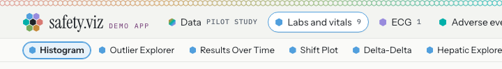

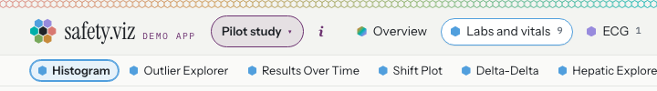
- The chip, with the i beside it.
- The first tab is now called Overview.
Before, the study's name was a label on the Data tab. Now the chip carries it on every tab.

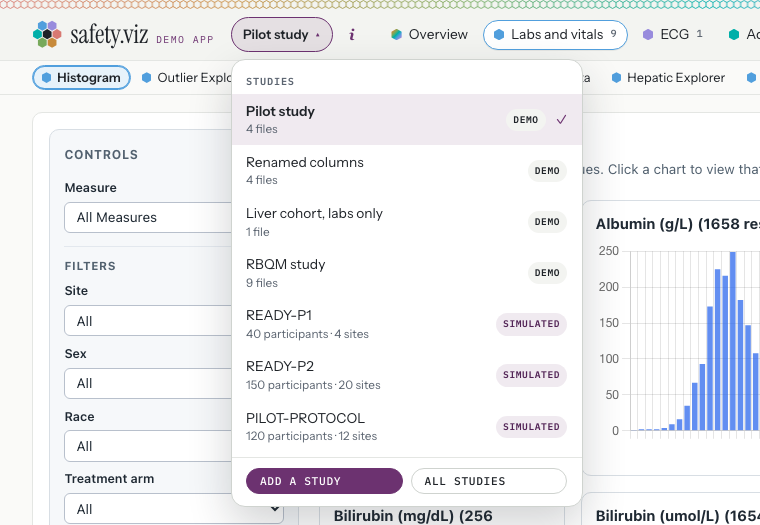
- The chip. A tick marks the study in use.
- 4 studies marked DEMO: Pilot study, Renamed columns, Liver cohort, labs only, RBQM study.
- 3 marked SIMULATED: READY-P1, READY-P2, PILOT-PROTOCOL. These are ready-made.
- ADD A STUDY and ALL STUDIES both lead to the Studies page.

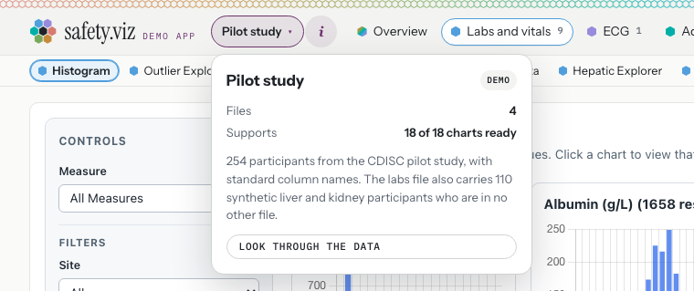
- The card names the study and its kind, counts its files, and says “18 of 18 charts ready”.
- Open the demo app and press the chip that reads Pilot study.A list headed STUDIES opens: 4 demo studies, then 3 simulated ones.
- Press the i beside the chip.A card says what the study is, and ends with LOOK THROUGH THE DATA.
Choosing a study keeps you on the tab you were on
Here the app is on the Outlier Explorer. PILOT-PROTOCOL is chosen from the chip. The same chart is drawn again, on the new study.

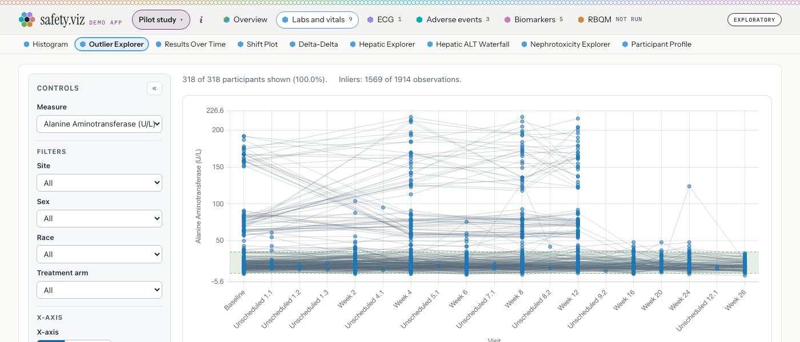

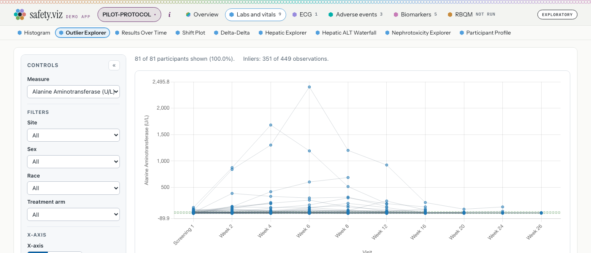
- The chip now reads “PILOT-PROTOCOL”.
- The Outlier Explorer is still the chart shown.
- The browser tab's title was “Outlier Explorer · safety.viz demo” before and after.
- The switch took 798 milliseconds on this capture. The page made 0 requests to R's hosts: a ready-made study is a stored file, not a build.
- The app said “18 of 18 charts supported by the loaded data”. The Adverse events and ECG tabs were opened on it too (Adverse Event Explorer, QT Explorer); they are read here, not shown.
- The i for a simulated study says how it was made, gsm.datasim 2.1.0, and that “Every row is synthetic.”
- In the demo app, choose Outlier Explorer.The chart draws the Pilot study.
- Press the chip and choose PILOT-PROTOCOL.The chip changes. You are still on the Outlier Explorer.
The Overview tab shows a simulated study in sections
For a simulated study the Overview tab is study.builder's study view. One line gives the study's facts. Under it are the sections, and a section with more than one view has a second row of tabs.

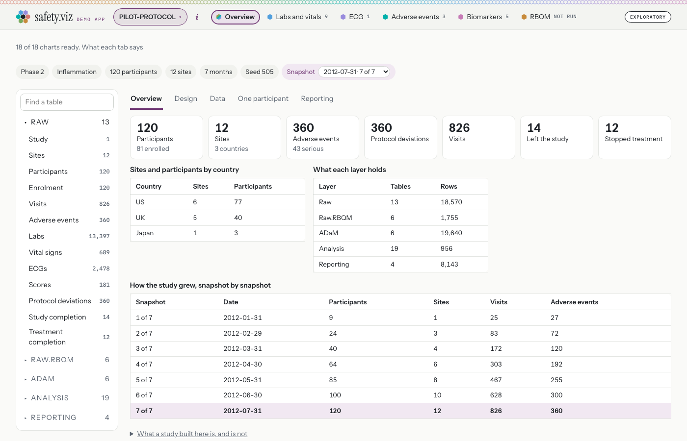
- The sections: Overview, Design, Data, One participant, Reporting.
- The study's tables, by layer: RAW 13, RAW.RBQM 6, ADAM 6, ANALYSIS 19, REPORTING 4.
- The snapshot chooser. This study kept 7 monthly snapshots.
The facts in the line: Phase 2, Inflammation, 120 participants, 12 sites, 7 months, Seed 505. The app said “18 of 18 charts ready”.
| Section | Its views | What it holds |
|---|---|---|
| Overview | one | Counts, sites by country, what each layer holds, how the study grew. |
| Design | Protocol, Schedule | The protocol the study followed, and its schedule of activities. Shown only when the study followed a protocol. |
| Data | Pipeline, Tables, Columns | What built each table, the rows of a table, and a profile of each column. |
| One participant | one | One participant followed across every table. |
| Reporting | Efficacy, Adverse events | The simulated score by arm, when the study simulated one, and adverse events by arm. |

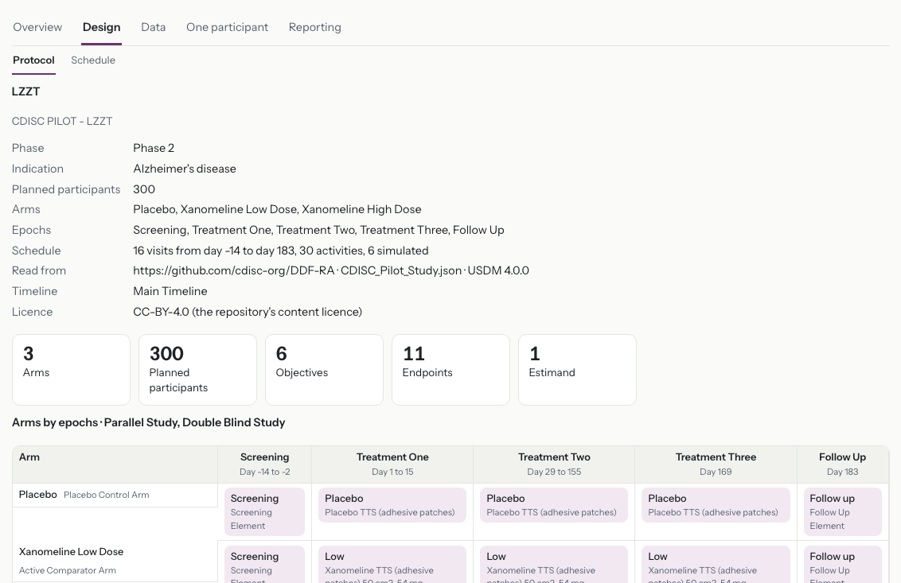
Headings on this view: “Arms by epochs · Parallel Study, Double Blind Study”, “Objectives, endpoints and estimands”, “Activities · 10 of 36 simulated”.

Activities by visit. A dot marks an activity at a visit; activities the simulator leaves out are labelled so.

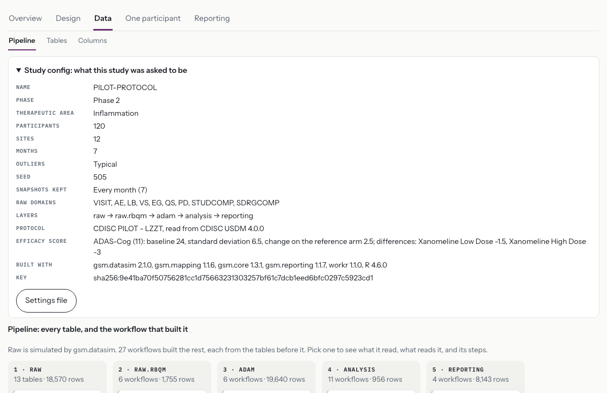
“Pipeline: every table, and the workflow that built it”.

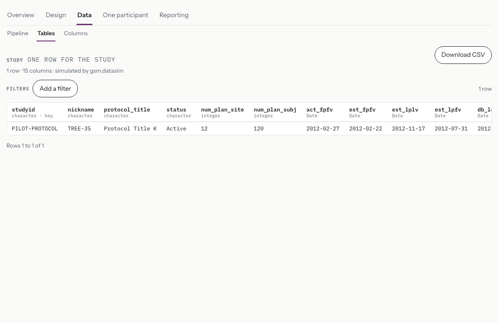
The rows of the table chosen on the left, with filters and sorting.

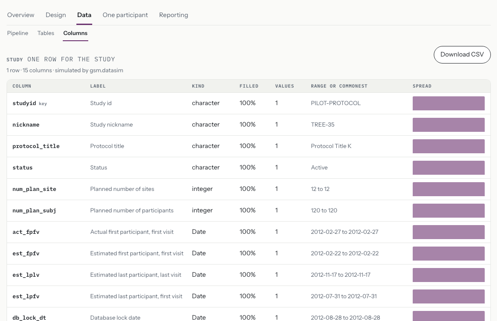
A profile of every column of the table.

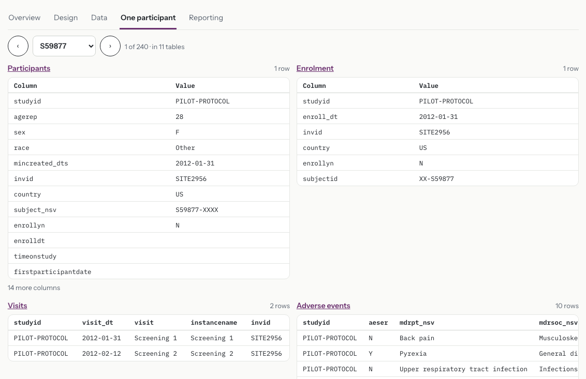
One participant across every table that holds them.

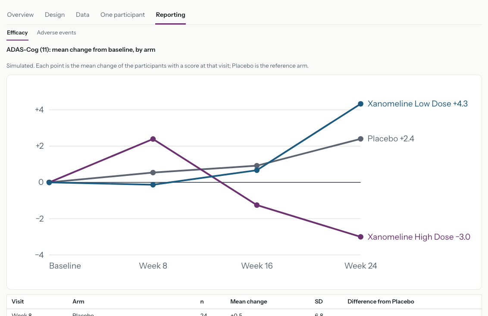
“ADAS-Cog (11): mean change from baseline, by arm”. The view says the numbers are simulated.

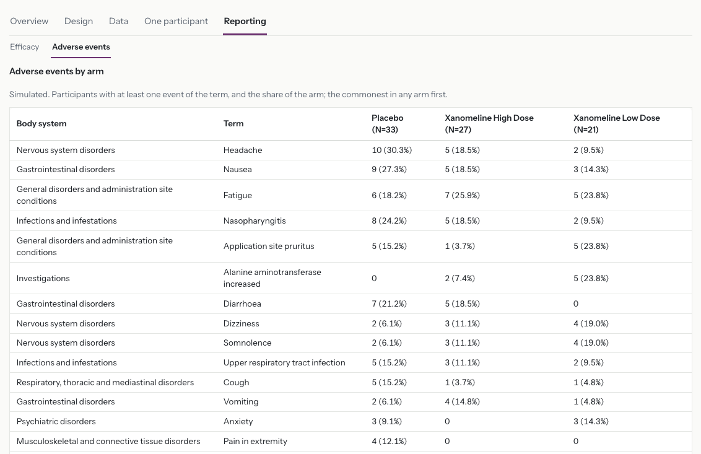
“Adverse events by arm”.

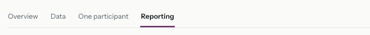
READY-P1 did not follow a protocol, so it has no Design section: Overview, Data, One participant, Reporting. Its Reporting section has one view, “Adverse events by arm”, because it simulated no score.
- study.builder has RBQM and Safety views of its own. They are left out here. The app’s RBQM tab and its chart tabs show the same study.
- A demo study is not shown in sections. Its Overview tab has Tables, Columns, One participant (section 6).
- Choose PILOT-PROTOCOL from the chip, then press Overview.The sections are Overview, Design, Data, One participant, Reporting.
- Press Design, then Schedule.The protocol’s visits run across the top, its activities down the side.
- Choose READY-P1 from the chip.The Design section is gone: that study followed no protocol.
All studies opens a Studies page
The page is the chip's list, laid out in full, with the ways to add a study above it. “Every study this page offers and this browser has kept, whatever it came from. Open one to work with it.”

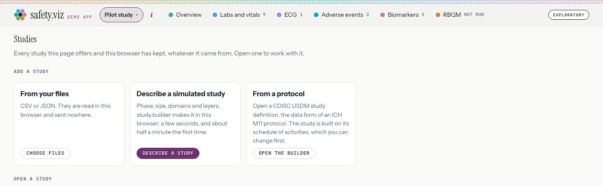
- ADD A STUDY: three ways.
- OPEN A STUDY: every study, with its kind and size. The list is the next still.
The three ways to add a study, as the page words them:
- From your files
- CSV or JSON. They are read in this browser and sent nowhere. CHOOSE FILES
- Describe a simulated study
- Phase, size, domains and layers. study.builder makes it in this browser: a few seconds, and about half a minute the first time. DESCRIBE A STUDY
- From a protocol
- Open a CDISC USDM study definition, the data form of an ICH M11 protocol. The study is built on its schedule of activities, which you can change first. OPEN THE BUILDER

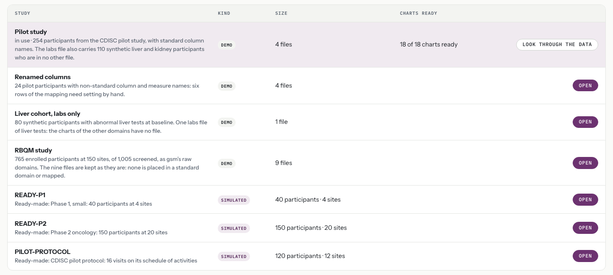
- The study in use has LOOK THROUGH THE DATA in place of OPEN.
The list held 7 studies on this capture. A study you build is added to it (section 5).
- Press the chip, then ALL STUDIES.The page is titled Studies. The browser tab reads “Studies · safety.viz demo”.
- Press Open beside READY-P2.The chip reads “READY-P2”. You stay on the Studies page.
A study can be built in the browser
DESCRIBE A STUDY opens study.builder's form in place of the loaded files. You describe a trial. gsm.datasim simulates it with R, in this browser. Nothing is sent anywhere.

- The trial: a name, a phase, a therapeutic area, then Participants · 20 to 500, Sites · 2 to 100, Months · 3 to 12, Seed · optional.
- A protocol, in place of a description: Open a file… or one of 5 examples.
- The layers, drawn as the pipeline they are: Raw, Raw.RBQM, ADaM, Analysis, Reporting. Under them, the raw domains to include.
- What you will get, and Build the study.
This capture pressed phase 1, which filled in 40 participants at 4 sites over 6 months, then typed smaller numbers: 24 participants, 3 sites, 3 months, seed 11.

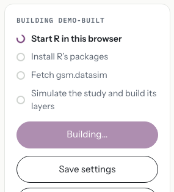
Each step is said as R takes it: “Start R in this browser”, “Install R’s packages”, “Fetch gsm.datasim”, “Simulate the study and build its layers”.

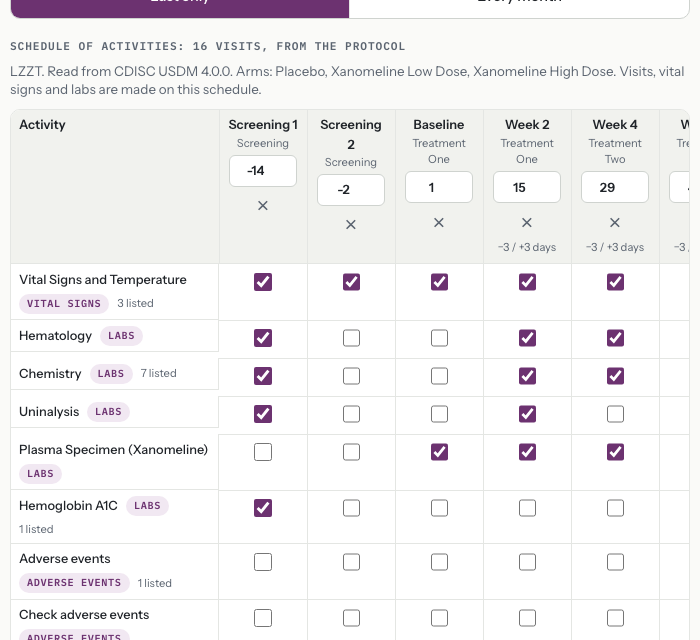
After Try the CDISC pilot protocol: “SCHEDULE OF ACTIVITIES: 16 VISITS, FROM THE PROTOCOL”. Each visit's day can be typed over, and each activity ticked or cleared. This capture did not build from a protocol.

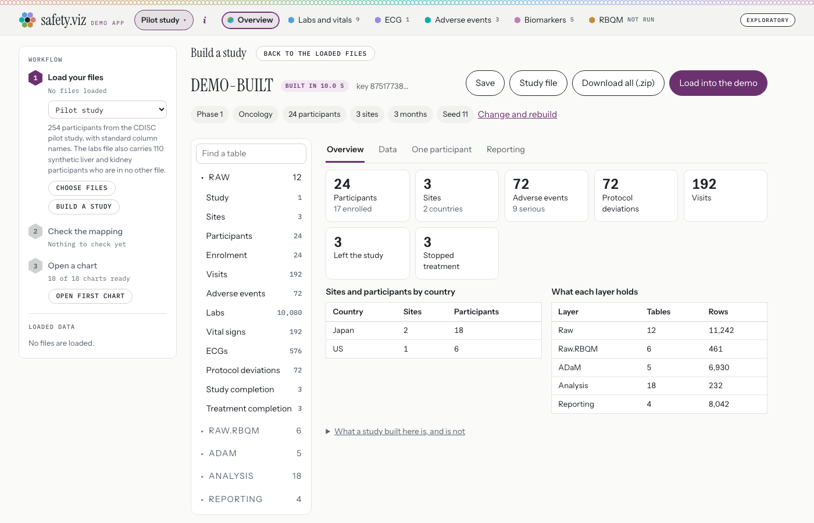
- “Built in 10.0 s”: the simulation itself, once R was ready.
- Load into the demo hands the study to the app.
- The study view, in the builder: Overview, Data, One participant, Reporting.
From pressing Build the study to this screen took 61 seconds on this capture. The first three steps, starting R and fetching what it needs, took 32 seconds of that: the page made 9 requests to R's own host and 39 to its package host. The study has RAW 12, RAW.RBQM 6, ADAM 5, ANALYSIS 18, REPORTING 4.

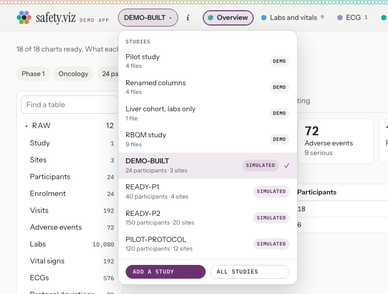
- DEMO-BUILT is in the list, marked SIMULATED, and in use.

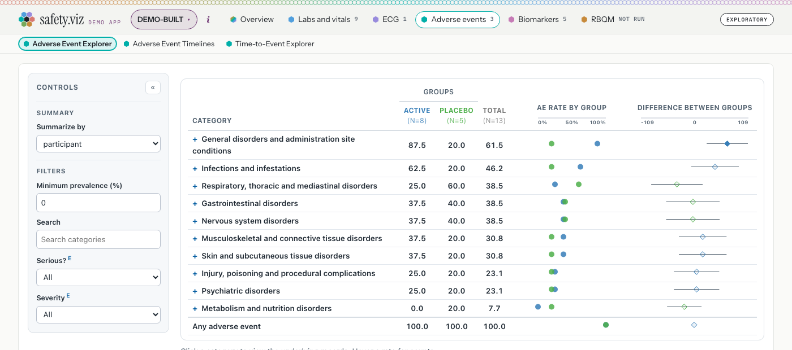
The Adverse Event Explorer on the built study. The app said “18 of 18 charts supported by the loaded data”.
- After Load into the demo the app showed the Overview tab, with the chip reading “DEMO-BUILT”.
- The built study is kept by this browser. After the page was reloaded it was still in the chip's list. The study in use after the reload was “Pilot study”, not the built one.
- The builder says what a simulated study is: “Every row is synthetic. Phase and area shape the results a little. Phase 1: labs are out of range less often, fewer adverse events are serious and they are milder. Oncology: more gastrointestinal, general and nutrition events, more serious and severe ones, and more liver and kidney rises.”
- Press the chip, then ADD A STUDY, then DESCRIBE A STUDY.The form opens, headed New study.
- Press phase 1. Set 24 participants, 3 sites and 3 months. Press Build the study.The four steps tick by. The first build took 61 seconds here; yours depends on your connection.
- Press Load into the demo.The chip names your study. Every chart tab draws it.
- To see a protocol: press ADD A STUDY again, OPEN THE BUILDER, then Try the CDISC pilot protocol.The schedule of activities appears in the form, as a grid you can change.
Every loaded file shows what it holds, and columns are mapped in place
For a demo study the Overview tab has two faces: Explore the data, Files. Files lists each file with a folded Details section. Explore the data is where a column is set.

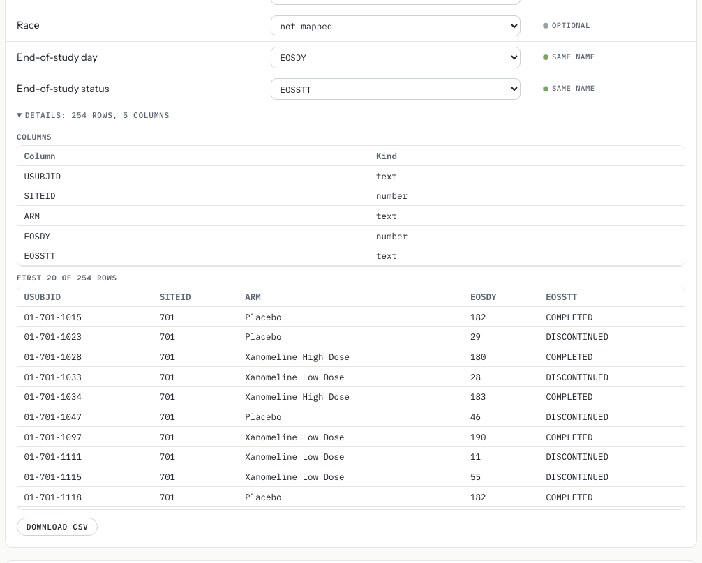
- The fold reads “DETAILS: 254 ROWS, 5 COLUMNS”.
- Under the first 20 rows, DOWNLOAD CSV.
adsl.csv in the Pilot study. Each column has a kind: number, date or text. The other files read “DETAILS: 1,159 ROWS, 10 COLUMNS”, “DETAILS: 57,929 ROWS, 15 COLUMNS”, “DETAILS: 5,361 ROWS, 17 COLUMNS”.

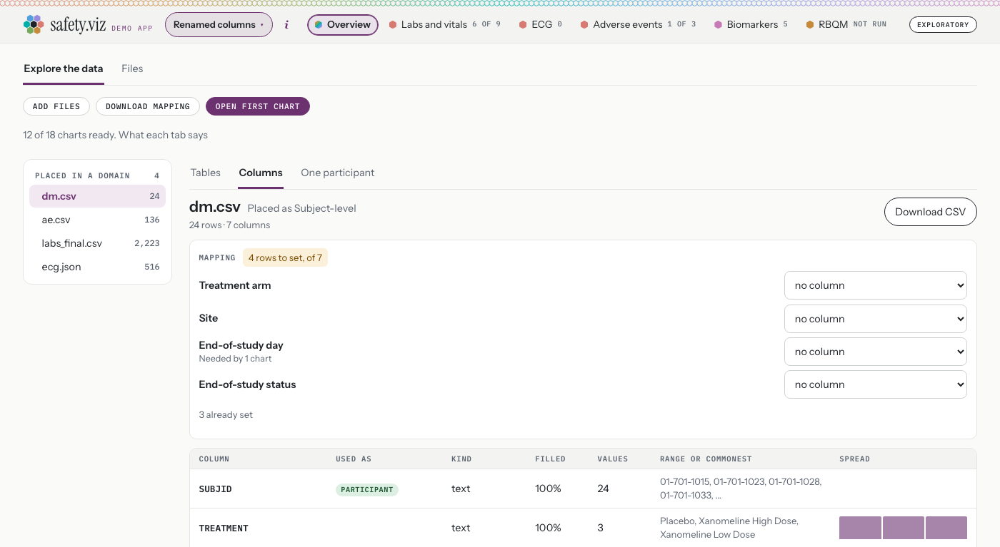
- The Columns view.
- “4 rows to set, of 7”: the rows still to set come first.
- A row that a chart waits on says so: “Needed by 1 chart”.
The Renamed columns study, whose columns have other names. The app said “12 of 18 charts supported by the loaded data”.
- This capture set “End-of-study day” to the column LASTDAY. The box then read “3 rows to set, of 7”, and the app said “13 of 18 charts supported by the loaded data”.
- The same row on the Files face then read LASTDAY: one mapping, set in either place.
- Choose Pilot study from the chip, press Overview, then Files. Open Details under a file.Its columns with their kinds, its first 20 rows, and a Download CSV button.
- Choose Renamed columns from the chip, press Explore the data, then Columns.The Mapping box reads “4 rows to set, of 7”.
- Set End-of-study day to LASTDAY.The count of charts the data supports goes up: 12 to 13 here.
The app starts R once
Two parts of the app use R in the browser: the RBQM tab and the builder. They share one R. Whichever starts it first pays for the download; the other does not download it again. Both orders were run, each in a fresh browser.
| Order | Step | Time | Requests to R's host | Requests for packages |
|---|---|---|---|---|
| Build first | Build a study of 24 participants | 61 seconds | 9 | 39 |
| Then the RBQM tab, Start R, on the built study | 9 seconds | 0 | 0 | |
| RBQM first | The RBQM tab, Start R, on the Pilot study | 62 seconds | 9 | 35 |
| Then build the same small study | 20 seconds | 0 | 4 |
Times are from one run on one machine and will differ on yours. The counts are requests the page made to webr.r-wasm.org, R's own host, and to repo.r-wasm.org, its packages. The second step in each order made no request to R's own host.

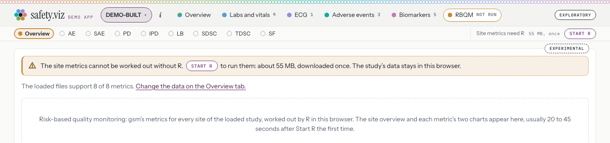
R was already running here, started by the builder. The tab still asks for Start R, and still says “55 MB, once”. Pressing it downloaded nothing.

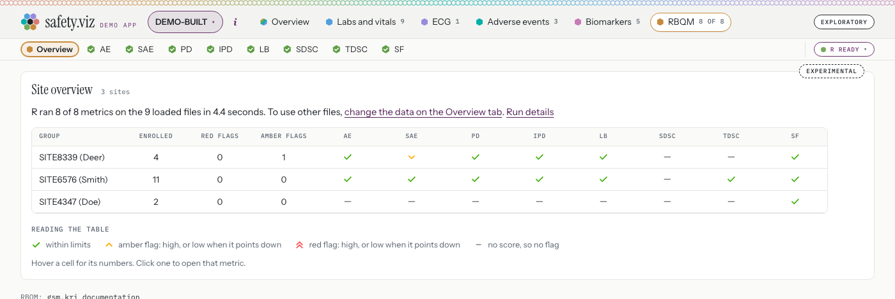
“R ran 8 of 8 metrics on the 9 loaded files in 4.4 seconds.” Every one of gsm's eight site metrics runs on a built study, because it carries gsm's raw files. On the Pilot study the tab ran 3 of 8.
- Build a study and load it (section 5).R is now running in the page.
- Open the RBQM tab and press Start R.The site overview appears in seconds, not the minute a first start takes. Here: 9 seconds.
- After the builder had started R, the RBQM tab still read “Site metrics need R 55 MB, once” and still asked for Start R. After the RBQM tab had started R, the builder still read “First build in this browser: about half a minute and 55 MB, to start R.” In both cases R was not downloaded a second time (section 7).
- The first build took 61 seconds on this capture. The builder's own note reads “First build in this browser: about half a minute and 55 MB, to start R.”
- While the builder is open, the panel on the left reads “No files loaded”, though the chip still names “Pilot study” and its charts still draw.
- PILOT-PROTOCOL opened on its last snapshot, “2012-07-31 · 7 of 7”. Opened after READY-P1, whose last snapshot is “2012-06-30 · 6 of 6”, it showed “2012-06-30 · 6 of 7”: the snapshot chosen for one study carried to the next.
- After a reload the app opens on “Pilot study”, whichever study was in use before.
- Files of your own. Every still is of a demo study, a ready-made study or the study built here.
- Building from a protocol. The form was opened on “the CDISC pilot protocol” and not built. The other 4 examples and Open a file… were not pressed.
- The builder's Save, Study file, Download all (.zip) buttons, the app's “Download as one file”, and the Biomarkers tab on a simulated study.
- A phone, and any browser but Chromium. The stills are of a 1,400 by 900 window.
- Whether a result is right. This page shows what the app does, not that a simulated study is a good one. Nothing in the app is qualified; its own label says “Exploratory”.
The release
- The release notes, section v1.13.0.
- The app, until the release: the dev build. After it: the released app.
- Studies, the chip and the study view as the Overview tab (safety.viz pull request #395).
- The copy of study.builder moved to its v0.5.0 release (#398) (#399).
Beside it
- study.builder: the builder and the study view. safety.viz carries a copy of its v0.5.0 release.
- The study.viz v0.1.0 demo page: the same app in a repository of its own.
- The safety.viz v1.12.0 demo page: the release before this one.